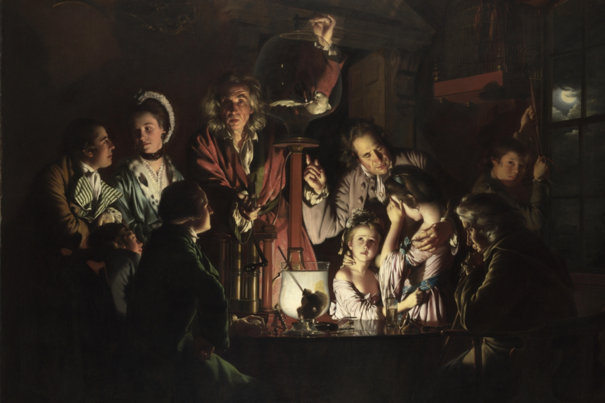
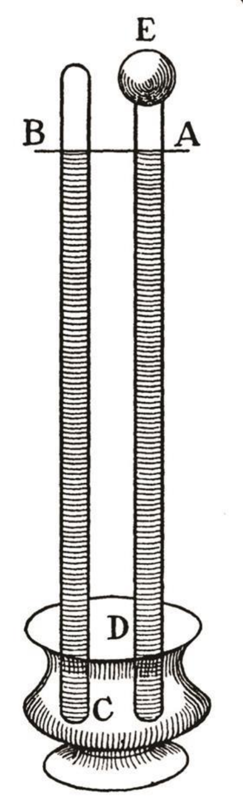
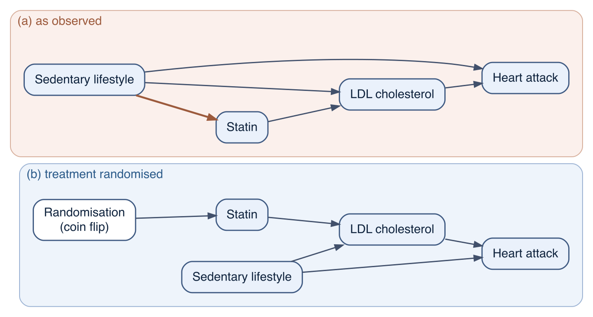

4 Causation and the experiment
The logic chapter, Chapter 3, ended with a specification for a logic that grades belief; Part II builds it. Before that, this chapter and the next ask what the beliefs are about when a scientist says that one thing causes another. This chapter takes the historical route: how the idea of a cause was understood before anyone tried to test one, how Hume showed that no test of the usual kind can reveal a cause, and how the controlled experiment, from the air pump to the randomised trial, became the instrument that lets a causal claim be checked anyway. The chapter closes with the book’s first simulation, which shows what randomisation does to a set of data, and with the two problems that the rest of the book exists to solve: what to do when randomisation is not available, and how to reason when the evidence is uncertain. The philosophical accounts of causation that may or may not compete with the one this book uses are the subject of Chapter 5.
4.1 Ancient theories of causality
Aristotle (384–322 BC) offers four types of answer to the question “why?”
the material cause – this is what things are made of.
the formal cause may be expressed in a definition. It is a form and a pattern of a thing. The proportion of the lengths of strings is the reason for different notes played on a lyre being an octave away.
the efficient cause – this is the origin of a change or state of rest. A person reaching a decision, a father who begets a child, a sculptor carving a statue, a doctor curing a patient.
the final cause is the purpose for which something is done (a doctor works to make the patient healthy, a lung works to oxygenate the body, etc.). For living things the formal and final causes coincide (the realisation of a mature organism is the goal towards which an organism strives).
Aristotle’s causes and effects are usually not single events, as causation is commonly seen in modern philosophy, but more complex entities, like human beings or proportions or the skill of the sculptor. Effects can also be states, actions, substances, events. According to Aristotle, following the four causes will result in a natural-science kind of explanation of things. The four causes are explanatory tools, and Aristotle applies them as readily to physics as to biology: the same four questions are asked of a falling stone as of a growing organism, and his general treatment of the scheme is in the Physics, not in the biological works.1 Two features separate this scheme from what follows in this chapter. Its causes and effects are things, forms and ends rather than events; and it contains no procedure for testing a causal claim. The Stoics, who kept only efficient causes, are taken up in Chapter 5 as an ancient precedent for the component-cause model.
4.2 Hume
David Hume (1711–1776)
A Scottish philosopher and historian, born in Edinburgh. His main philosophical works are A Treatise of Human Nature (1739–1740), written before he turned thirty, and the shorter, more accessible An Enquiry Concerning Human Understanding (1748). Hume was an empiricist: he held that all knowledge of the world derives from sense experience, and that every genuine idea can be traced back to some sensory impression. He twice applied for a university chair and was twice rejected, largely on suspicion of irreligion; he earned his living as a librarian, essayist, and author of a best-selling history of England. His sceptical analyses of causation and of inductive inference are his most influential legacy, and they are the starting point of the story this section and the next one tell.
It was David Hume who gave causality its modern (sceptical) philosophical form. For him, to speak of a causal connection, four conditions must hold: 1) a cause must directly interact with the effect in the physical world; 2) a cause always precedes the effect in time; 3) a cause leads to the effect without exception (there cannot be a cause without the effect, although there can be effects with more than one cause); 4) there is a necessary connection between cause and effect (this is power, force, or any glue that makes the effect have to follow the cause, and it may or may not be “physical”). To complicate things further, he mentions a counterfactual view of causality: “if the first object had not been, the second never had existed”. So there is a “thing A”, which is cause, a “thing B” which is effect, a mysterious connection between them, which grants them perfect co-existence over time: every time that A occurs, B must by necessity follow. Things are further muddied if one considers that day always follows night, without night causing the day; and that smoking sometimes, but not even in most cases, causes cancer.
For Hume the difficulty was that it is impossible to verify empirically, or to deduce logically, that B always follows A. In addition, he shows that the necessary connection between cause and effect is nowhere to be found in the objects or their interaction, physical or otherwise, and that the only genuine impression of necessity is the one arising in the observing mind after repeated experience. This makes causality part of human psychology, rather than an empirically verifiable feature of the physical world.
an object may be contiguous and prior to another, without being consider’d as its cause. There is a NECESSARY CONNEXION to be taken into consideration; and that relation is of much greater importance than any of the other two above-mention’d.2
According to Hume, since all our ideas ultimately derive from sense experience, and there is no sense impression of necessity in any single instance, the puzzle is where the idea of necessary connection comes from. Hume’s answer is that the idea originates not in the objects but in the mind. After repeatedly experiencing A followed by B, the mind forms a habit, so that upon seeing A it expects B. So necessity “is nothing but an internal impression of the mind, a determination to carry our thoughts from one object to another.”
This is a relocation, not an elimination. Causation as it exists “in the objects” reduces to regular succession—constant conjunction—with no discoverable necessity. The necessity we feel is projected onto the world by our own habituated minds. This is why Hume concludes that causal reasoning rests on custom rather than reason: we cannot rationally justify the inference from past to future, yet nature compels us to make it anyway.
Scholars disagree about how far Hume goes. On the traditional reading he denies real necessity in the world outright; on the “New Hume” or sceptical-realist reading, he only denies that we can know such necessity, while remaining agnostic about whether it exists. The two definitions of cause he gives (one in terms of constant conjunction, one in terms of the mind’s determination) are the main textual battleground for that debate.
Either way, Hume leaves empirical science in a difficult position. Its two core operations — inferring causes from observations, and generalising from observed cases to unobserved ones — turn out to have no rational justification, only a psychological one. The first systematic attempt to answer him came from Immanuel Kant, and the answer required rebuilding the theory of knowledge from the ground up.
4.3 Kant’s response
Immanuel Kant accepted Hume’s negative result and denied his premise.3 If everything we know came from sense data, Hume would be right: no amount of observation delivers necessity. But some of what we know, Kant argued, comes from the structure of the mind that receives the data, and causality is part of that structure. Every event has a cause, on this account, not because the world has been found to be that way but because a mind like ours cannot organise experience in any other way. The necessity Hume could not find in the objects becomes a condition the mind imposes.
Kant’s account drives a hard bargain. He took Euclidean geometry and Newtonian mechanics to be knowledge of the same kind, certain in advance of experience. However, in the following century non-Euclidean geometries and then general relativity showed that both were actually empirical questions with answers Kant had ruled out. What survives is the shape of the idea: causal structure is supplied to the data rather than read off them. What did not survive was the guarantee. The details of Kant’s model of cognition, and the objections that were raised against it, are given in Chapter 5.
The Hume–Kant episode sets the agenda for the rest of this book. Hume showed that causal necessity cannot be observed: what the data contain is association (constant conjunction), and the step from association to causation must be supplied from outside the data. Kant agreed, and located the supply in the fixed structure of the mind; the fate of his Newtonian guarantee shows the cost of taking that structure to be certain. The modern position, developed in Part III, accepts Hume’s point and drops Kant’s guarantee. The causal structure we impose on data is made explicit as assumptions — a counterfactual contrast we define (Chapter 11), a causal diagram we draw (Chapter 12). Those assumptions are then defended, probed, and revised. Where Kant sought necessity, we settle for quantified uncertainty: probability theory as the logic of science (Part II).
4.4 Mill on causes: from regularity to the controlled comparison
Half a century after Hume, John Stuart Mill set out the rules by which causes are in fact inferred from observation, in the chapter of his System of Logic titled “Of the four methods of experimental inquiry”.4 Mill did not claim to have answered Hume; he just wanted to describe what scientists do, and his description has lasted. There are five methods, of which two matter for this book.
The method of agreement looks at several instances in which an effect occurs and picks out the one circumstance they share: if every outbreak of a disease is preceded by the same contaminated water source and by nothing else in common, the water is the candidate cause. The method of difference compares two instances that are alike in every respect except one: if the effect occurs in the instance with the circumstance and not in the instance without it, the circumstance is the cause, or an indispensable part of it. The joint method applies both. The method of residues subtracts the effects of known causes and attributes the remainder to what is left. The method of concomitant variation looks for an effect that rises and falls with a circumstance that cannot be removed altogether: the more of the exposure, the more of the outcome. Epidemiology knows the last one as the dose–response relationship.
The method of difference is the ancestor of the controlled experiment, and its wording contains the whole difficulty. The two instances must be alike in every respect except one. In the laboratory this can be approximated by construction: the same reagents, the same apparatus, one component added or withheld. Outside the laboratory it cannot. Two groups of patients, one treated and one not, differ in many respects other than the treatment, and the method of difference is silent about how to make them comparable. Mill knew this and confined the method to cases where the experimenter controls the circumstances. The randomised experiment, described below, is the device that recovers the “alike in every respect” premise for groups of people who are not alike as individuals; and the observational methods of Part III are what remains when even that device is unavailable, and the premise has to be argued for instead of bought.
Abduction narrows the field of possible causes
Mill’s methods also leave one step unspoken. Each of them takes a list of circumstances as given and asks which of them is the cause; none says how a candidate gets onto the list. Charles Sanders Peirce named that step abduction and gave it a schema: a surprising fact C is observed; if A were true, C would be a matter of course; hence there is reason to suspect that A is true.5 For Peirce abduction is the first stage of inquiry, the one that produces a hypothesis worth testing, and the test itself, whether by Mill’s method of difference or by the randomised trial that descends from it, comes after. The simulation at the end of this chapter has this shape. A crude comparison that makes a protective drug look harmful is the surprising fact; “physicians give the drug to the sicker patients” is the hypothesis that would make it unsurprising; re-running the cohort with treatment assigned by coin flip is the test. In the book’s terms, drawing the causal graph of Chapter 12 is the abductive step and the estimation that follows is the test. And “C would be a matter of course under A” is a statement about how probable the data are given the hypothesis, the quantity that Part II calls the likelihood and makes numerical; the weak syllogism of Chapter 3 is the same inference stated as a rule of plausibility.
4.5 Early modern experiment
Experiment has meant different things to different people. Sometimes it is used to test a theory, sometimes it is used to help formulate theories, and sometimes it is done just to get new experiences, or just for fun. It is also done to figure out why something does not work (testing new enzymes to find out why a PCR reaction does not work), or how to improve some process (component titration to improve some reaction). There is not a single reason for experimentation.
Two great chemists took opposite views of where experiment stands in that list. Humphry Davy (1778–1829) placed it at the end of a chain that begins in observation: observation impresses facts on the mind, analogy connects them, experiment discovers new facts, and “analogy confirmed by experiment, becomes scientific truth”; his example is the air that collects on sunlit pondweed, which an inverted glass shows to feed a flame more brightly than the atmosphere does.6 Justus Liebig (1803–1873) held the reverse: an experiment is “only an aid to thought, like a calculation”, and one not preceded by an idea “bears the same relation to scientific research as a child’s rattle does to music”.7 Karl Popper took Liebig’s side in 1934: it is the theoretician who “shows the experimenter the way”, and theory “dominates the experimental work from its initial planning up to the finishing touches in the laboratory”.8
Joan Fisher Box, R. A. Fisher’s daughter and biographer, gives the fullest statement of what the experimenter is up against, and it is worth quoting at length:9
The whole art and practice of scientific experimentation is comprised in the skillful interrogation of Nature. Observation has provided the scientist with a picture of Nature in some aspect, which has all the imperfections of a voluntary statement. He wishes to check his interpretation of this statement by asking specific questions aimed at establishing causal relationships. His questions, in the form of experimental operations, are necessarily particular, and he must rely on the consistency of Nature in making general deductions from her response in a particular instance or in predicting the outcome to be anticipated from similar operations on other occasions. His aim is to draw valid conclusions of determinate precision and generality from the evidence he elicits. Far from behaving consistently, however, Nature appears vacillating, coy, and ambiguous in her answers. She responds to the form of the question as it is set out in the field and not necessarily to the question in the experimenter’s mind; she does not interpret for him; she gives no gratuitous information; and she is a stickler for accuracy. In consequence, the experimenter who wants to compare two manurial treatments wastes his labor if, dividing his field into two equal parts, he dresses each half with one of his manures, grows a crop, and compares the yields from the two halves. The form of his question was: what is the difference between the yield of plot A under the first treatment and that of plot B under the second? He has not asked whether plot A would yield the same as plot B under uniform treatment, and he cannot distinguish plot effects from treatment effects, for Nature has recorded, as requested, not only the contribution of the manurial differences to the plot yields but also the contributions of differences in soil fertility, texture, drainage, aspect, microflora, and innumerable other variables.
Fisher’s take on causality and experiment seems to be in direct succession with that of Francis Bacon, whose Novum Organum (1620)10 argued rather masculinely for “taking nature by the forelock” and that real learning occurred not when nature was “free and at large,” but when nature was “under constraint and vexed; that is to say, when by art and the hand of man she is forced out of her natural state, and squeezed and moulded”. For Bacon experiment was a “lawful marriage between the empirical and rational faculty”.
Robert Hooke’s memorandum on the business of the Royal Society (about 1663) drew the institutional consequence. The Society would improve the knowledge of natural things “by Experiments”, would “not own any hypothesis, system, or doctrine”, and would “question and canvass all opinions”, adopting none until “by mature debate and clear arguments, chiefly such as are deduced from legitimate experiments”, the matter was “demonstrated invincibly”.11
There are two types of experiments:
- In an uncontrolled experiment we create some artificial conditions, which we would normally be unable to observe, and then see, what happens. Robert Boyle’s New Experiments Physico-Mechanical, Touching the Spring of the Air and Its Effects (1660) described such experiments in artificial vacuum, which were done to understand the nature of air, its effects on animals and respiration, and the relationship between the pressure (“spring of the air”) and volume of gas in a closed system. Essentially, such an experiment creates new experiences, and its detractors not unreasonably asked, why bother studying these new things that are generated, at great cost, by poorly understood unnatural means, when the world is filled with wholly natural phenomena, waiting for explanation.
For example, when people put a bird into a vacuum pump, it died; and adding a burning candle quickens the process. But building a really big vacuum pump and putting a child inside did not result in any harm to the child. So, without controls, what can we conclude from these experiments?
- In a controlled experiment we compare (at least) two sets of conditions, and the comparison, not either condition alone, carries the conclusion.
In 1644, Evangelista Torricelli performed the famous experiment of “argento vivo” (mercury). Several glass tubes of different diameters, sealed at one end, were filled with mercury. After placing a finger over the opening, they were upturned into a mercury basin. The level of mercury in the tubes initially fell, then stopping at a height of ‘one braccio, a quarter and a finger more’, leaving an empty space at the top. Its emptiness was confirmed by pouring water into the basin. When the bottom of the tube was lifted to the level of the water, the mercury drained out, while the water ‘rushed in with horrible force’ until the tube was full. Torricelli proclaimed that the space created by the descent of the mercury in the tube was vacuum, and that the air exerted on the mercury in the basin held up the column of mercury. He declared that his experiment proved two fundamental concepts: that nature did not abhor the void, and that the air had weight.

Torricelli further documented that the height of the mercury in a barometer changed slightly each day and concluded that this was due to the changing pressure in the atmosphere. He wrote: “We live submerged at the bottom of an ocean of elementary air, which is known by incontestable experiments to have weight”.
By 1646, Blaise Pascal had learned of Torricelli’s experiment. A confirmation of the influence of atmospheric pressure was given by the so-called “void within a void” experiment, successively performed in 1648 in several variants by Pascal, Robert Boyle, and others. If Torricelli’s experiment was performed inside a vacuum pump, the mercury would not remain in the vertical tube, but would descend completely into the basin. They also observed that when, in a control experiment, air was allowed back in, the mercury rose back up the tube.
To decisively check Torricelli’s conclusions, in 1648 Pascal had a barometer carried up the mountain of Puy de Dôme, where his brother-in-law made several measurements at different altitudes (Pascal himself was too sickly to climb any mountains). Importantly, control measurements were done at appointed hours at the foot of the mountain by a local clergyman. Indeed, as the elevation increased the level of the mercury column gradually fell below that at normal ground level, while the control measurements were very stable, despite rapidly changing weather.
4.6 The randomised controlled trial
Comparison against a control, as in Pascal’s mountain, removes the influence of everything that changes over time in the same way in both arms. It does not remove the influence of what differs between the arms at the start. When the units are people rather than tubes of mercury, they differ in age, in severity of illness and in a thousand unmeasured ways, and if the treated differ systematically from the untreated in any of these, the comparison confounds the treatment with the difference. This is confounding: a difference between the arms in something other than the treatment that itself affects the outcome, so that the comparison mixes the effect of the treatment with the effect of the difference. Part III (Chapter 11, Chapter 12) makes the definition exact; Chapter 5 takes up its clinical form, confounding by indication. The remedy is to let a randomisation device decide who is treated. R. A. Fisher introduced randomisation into agricultural experiments in the 1920s;12 Austin Bradford Hill brought it into medicine in a series of seventeen Lancet articles in 1937, republished the same year as Principles of Medical Statistics, with the argument that groups formed by chance differ only by chance.13 The first randomised clinical trial in the modern sense, the Medical Research Council’s trial of streptomycin for pulmonary tuberculosis, reported in 1948; its randomisation was helped along by the shortage of the drug, which made it ethically possible to withhold it from half the patients.14 Evidence-based medicine as a movement followed some forty years later.
Modern experiments in biomedicine are nearly always of the controlled kind; clinical trials that lack a control group still appear, and carry far less weight. The important properties of a clinical experiment are that it is controlled, randomised and, where possible, blinded. All true experiments have these features in common:
- They try to answer a causal question about the effect of a treatment on an outcome.
- They contain an experimental treatment that acts on the hypothesised cause and, by design, on nothing else that affects the outcome. (This is the demand that the treatment work only through the cause under study; it returns as the exclusion condition of an instrument in Chapter 18.)
- Their results are relative to a control condition.
- Treatment is assigned at random, so that the treatment is the only factor that differs systematically between the arms.
A good experiment requires both an appropriate design and an analysis that respects it. The structure of the analysis depends on the design, on the pre-treatment variables that were recorded, on the quality of the measurements, on dropouts and missing data, on blocks and clusters in the data, and on the size of the data set. Figure 4.3 gives the scheme as a graph, in the notation that Chapter 12 develops, beside the observational situation that it repairs.

4.7 The vocabulary of experimental design
The terms below recur throughout the book. The laboratory-specific parts of the vocabulary (positive and negative controls of a measuring system, technical and biological replicates, reproducibility) are collected in Appendix B.
Experimental system. Everything that is needed to produce the data: the study subjects (cell lines, mice, patients), the materials, the measuring apparatus, the protocol and the people who carry it out. The experimenter’s task is to infer, from the data and from knowledge of the system, the mechanism that generated the data; statistical modelling is the tool for that inference.
Experimental treatment. An action that changes the experimental system according to a causal hypothesis. By changing a hypothesised cause we aim to change a hypothesised effect. The treatment should not affect the outcome by any route other than the cause under study, and it should be one thing: if “treated” covers several doses or routes with different effects, the treatment effect is not defined. This is the consistency condition of Chapter 11, one half of what that chapter calls SUTVA.
Interference. The other half of SUTVA is that one unit’s treatment does not affect another unit’s outcome. Testing a fertiliser on adjacent plots violates it, because the treated plot’s run-off reaches the control plot; vaccinating half a community violates it, because the vaccinated protect the unvaccinated. An epidemiologist may well hope for interference, since it increases the impact of a programme, but it changes what the treatment effect means. When interference is expected, one option is to assign treatment to whole groups beyond which interference is unlikely (villages, wards, classrooms), randomise at that level, and interpret the results at that level.
Units and outcomes. The experimental unit is whatever receives the treatment and is measured. Each unit usually carries other information as well: measured covariates and unmeasured ones. There are repeated-measures designs, in which the same unit is measured several times, and crossover designs, in which the experimental and control treatments are applied in sequence to the same unit (Chapter 28). A primary outcome is a measurement specified before the data are collected, whose result is the main result of the study. Secondary outcomes come from additional measurements or subgroup analyses; they are reported as needing independent confirmation, because they are many, and because they are often examined when the primary result disappoints.
Control treatment, arms and the treatment effect. The control treatment is a comparison condition, often a placebo or the current standard of care, that provides the baseline against which the treatment is judged. The treatment arm and the control arm are the groups of units that receive each. The treatment effect on the difference scale is the mean outcome in the treatment arm minus the mean outcome in the control arm; Chapter 11 gives it a precise definition and adds the other scales on which it can be stated.
Randomisation. Assigning units to arms with a random number generator. Full randomisation means that no attribute of a unit predicts which arm it lands in. It does not mean that the two arms contain an equal mix of units by every attribute: they are balanced in expectation, and any particular pair of arms is imbalanced by chance, more so when the arms are small. Randomisation removes bias from the comparison in the long run; it does not guarantee its absence in one sample.
Pre-treatment variables. Variables whose values are fixed before randomisation, such as age, sex or baseline disease severity. Randomisation makes them independent of the treatment; it does not make them independent of the outcome, and that is why they remain useful. Comparing their distributions across arms checks whether the randomisation worked as intended (Table 4.1 below does this), and adjusting for them in the analysis recovers precision without introducing bias (Chapter 21). Whether adjusting for a variable is harmless depends on where it stands in the causal structure, which is the subject of Chapter 12.
Blocking. To increase the precision of the treatment-effect estimate, the sample is divided into blocks within which units are similar (by sex, age group or comorbidity), and randomisation is carried out within each block. The blocking variables enter the analysis model as ordinary predictors. Matching is the extreme case of blocking with one treated and one control unit per block; twins are the natural example. Blocking and matching help to the extent that units within a block are alike in their pre-treatment characteristics.
Clustering. Units often come in groups that share a source of variation: patients within a centre, mice within a cage, measurements within a reagent batch. Ignoring the cluster understates the uncertainty; modelling it (Chapter 28) widens the intervals to what the design supports, and when treatment is assigned at the cluster level, the cluster is the unit of inference.
Blinding. A bias-reduction measure that hides the arm assignment from the participants, from the people who collect the data, or from the analysts. A weaker form keeps the assignment open but codes the data so that the analysis follows a pre-specified protocol and the codes are revealed only at the end.
Internal and external validity. A study has internal validity when its treatment-effect estimate is a valid estimate for the units it studied: the comparison is not confounded, the outcomes are measured without differential error, dropouts have not distorted the arms. Randomisation, blinding and pre-specification serve internal validity. A study has external validity when its result carries over to a population of interest: the patients in ordinary practice, the older and sicker groups that trials often exclude, another country. Random sampling from the target population serves external validity; random assignment does not, and a trial can have the first kind of validity without the second.
4.8 The experiment as the ideal: one simulated trial
The book’s running example is a simulated cohort of 50 000 hypertensive patients, some of whom take a blood-pressure-lowering drug, followed for stroke. The cohort is described fully in Chapter 11; here it serves just one simple purpose. By virtue of simulation, we know the drug’s exact true effect, and we can easily generate a second version of the same cohort in which the drug is assigned by a coin flip instead of by physicians. Thus, comparing the two simulations shows what randomisation does.
In the cohort as observed, physicians prescribe the drug more often to patients with more severe hypertension, and severity also raises the risk of stroke. In the randomised version every patient has the same chance of being treated regardless of severity, age or diabetes; nothing else about the patients, the drug or the outcome has changed.
Show code
df_obs <- simulate_cohort(n = N_COHORT, seed = 2024)
params_rct <- modifyList(default_params(),
list(d0 = 0, d_sev = 0, d_dm = 0, d_pref = 0))
df_rct <- simulate_cohort(n = N_COHORT, seed = 2024, params = params_rct)
risk_ratio <- function(d) mean(d$stroke[d$drug == 1]) / mean(d$stroke[d$drug == 0])
rr_obs <- risk_ratio(df_obs)
rr_rct <- risk_ratio(df_rct)
truth <- cohort_truth(df_obs) # the oracle: the effect we built inThe risk ratio is the stroke risk among the treated divided by the stroke risk among the untreated; a value below 1 means the treated fare better. In the cohort as observed the crude risk ratio is 1.67: the treated have a stroke 67% more often than the untreated, and the drug looks harmful. The true effect of the drug, which we know because we wrote the simulation, is a risk ratio of 0.60: the drug prevents about 40% of the strokes that would otherwise occur. The crude comparison has the sign wrong. In the randomised version of the same cohort the crude risk ratio is 0.58, within sampling error of the truth. The same arithmetic, on data produced by the same mechanism, gives the right answer as soon as the treatment is assigned at random.
The balance table, Table 4.1, shows why, and collects the two risk ratios. In the observed cohort the treated are more severely ill, older and more often diabetic than the untreated, and each of these raises the stroke risk on its own: the crude comparison is confounded by severity, age and diabetes. In the randomised cohort the two arms match on all three to within chance.
| cohort | arm | mean severity | mean age | diabetes (%) | stroke risk (%) | risk ratio | n |
|---|---|---|---|---|---|---|---|
| as observed | treated | 0.67 | 64.3 | 31.3 | 5.82 | 1.67 | 27303 |
| untreated | -0.53 | 59.4 | 15.6 | 3.48 | 22697 | ||
| treatment randomised | treated | 0.12 | 62.1 | 24.4 | 4.10 | 0.58 | 24908 |
| untreated | 0.13 | 62.1 | 23.9 | 7.06 | 25092 |
Two things about this demonstration carry forward. First, randomisation did not change the analysis; a ratio of two proportions was wrong in one data set and right in the other. What changed is a fact about how the data arose, and no amount of looking at the second data set alone would reveal that fact. The causal reading of a comparison rests on knowledge about the design, not on the numbers. Second, the demonstration was possible because we could re-run the world with a different assignment mechanism. A study of real patients has one version only, the observed one, and the question of Part III is how far its data, together with assumptions that must be stated and defended, can stand in for the version that was never run.
4.9 Parallel worlds, and the problem randomisation does not solve
Causal inference, at least in epidemiology, is a comparison between what happened and what would have happened otherwise. Ideally one would watch the same patient in two parallel worlds, treated in one and untreated in the other, and take the difference. We have access to one world, and the other is a counterfactual: real enough to define, impossible to observe. Holland named this the fundamental problem of causal inference,15 and Chapter 11 makes it precise. Without direct access to the second, counterfactual, world the next best thing is the randomised experiment, which gives up the individual comparison and compares two groups that differ, on average, only in the treatment.
This is a lot to assume, and the assumptions do not vanish when the experiment succeeds. A randomised comparison gives an average effect in the population that was randomised, for the treatment as administered, over the follow-up that was observed. Whether that effect transfers to another population, to the treatment as it will be used, or to a longer time horizon, cannot be settled by randomisation. Even worse, most causal questions epidemiology asks cannot be randomised at all: nobody assigns smoking, poverty or a genotype by coin flip. For those questions the “alike in every respect except one” premise of Mill’s method of difference has to be argued from knowledge of how treatment was in fact assigned. Making that argument explicit, and finding out what follows when it fails, is what Part III is for.
4.10 What this chapter sets up
Two things are now missing, and the two parts that follow supply them.
The first is a logic of uncertainty. The claims in this chapter have been treated as true or false: the drug lowers risk, or it does not. Real evidence is graded. A trial with forty patients and one with forty thousand do not support the same confidence; a crude comparison and a randomised one do not carry the same weight; a prior expectation from pharmacology counts for something before the first patient is enrolled. Chapter 3 argued that classical logic cannot express any of this. Part II builds the extension that can, and shows that it is forced, not chosen: a reasoner who grades belief consistently must grade it by the rules of probability.
The second is a formal theory of the counterfactual. This chapter used “what would have happened otherwise” as an intuition. To do anything with observational data, the intuition has to become notation that says which quantity a study estimates and what has to be true of the design for the estimate to have a causal reading. That is the potential-outcomes framework of Chapter 11, and the causal diagrams of Chapter 12 are the tool for saying, and checking, what has to be true. Before either, Chapter 5 places the counterfactual account among the rival philosophical theories of causation and states the book’s metaphysical firewall (named in Chapter 1): the counterfactual definition is an operational convenience for a decision-oriented science, not a claim about what causation is.
4.11 Key points
- Aristotle’s four causes are a scheme for explanation, not a procedure for testing a causal claim; Hume showed that no procedure of the usual kind can reveal a cause, because what observation delivers is regular succession, never necessity.
- Kant relocated causal necessity into the structure of the mind and paid for it with a guarantee that physics later revoked. The modern position keeps his insight, that causal structure is supplied to the data, and drops the guarantee: the supplied structure is an assumption to be defended.
- Mill’s method of difference is the logic of the controlled comparison, and its premise, alike in every respect except one, is the whole problem of causal inference outside the laboratory.
- A controlled experiment lets the comparison, not either condition alone, carry the conclusion; randomisation extends it to units that are not alike, by making the arms differ only by chance.
- Randomisation balances pre-treatment variables in expectation, not in every sample; adjusting for them recovers precision. Blocking, clustering and blinding serve the same end of a clean comparison.
- In the book’s cohort the crude risk ratio has the wrong sign as observed (1.67) and the right value once treatment is randomised (0.58 against a truth of 0.60): the causal reading of a comparison rests on the design, not on the arithmetic.
- The fundamental problem of causal inference is that the counterfactual outcome is never observed. Randomisation sidesteps it for an average effect; when randomisation is impossible, its premise must be argued from knowledge of how treatment was assigned (Part III), with the uncertainty of that argument stated in the language of Part II.
4.12 Exercises
- Weaker confounding. Re-run the two cohorts with the influence of severity on prescribing halved:
simulate_cohort(n = N_COHORT, seed = 2024, params = modifyList(default_params(), list(d_sev = 0.7))). Report the crude risk ratio and the balance table. Does the crude comparison still have the wrong sign? At what value ofd_sevdoes it change sign, and why is the true effect unchanged throughout? - Randomised but not adhered to. Start from
params_rctand imagine that patients randomised to the drug take it only if their severity is above the median (write this as a newdrug_takencolumn). Compare the risk ratio by randomised arm with the risk ratio by drug actually taken. Which comparison still has a causal reading, and what does it estimate? (Chapter 14 and Chapter 18 return to this contrast.) - Mill and the trial. State Mill’s method of difference as a rule for two groups of patients. Which word in the rule does randomisation supply, and which of Mill’s other four methods describes a dose–response study?
- Hume’s four conditions. Apply Hume’s four conditions for a causal connection to the claim that smoking causes lung cancer. Which conditions hold, which fail, and which failure did Hume himself already worry about?
- Blinding. A trial of a new analgesic is randomised but not blinded, and the outcome is self-reported pain. Describe two routes by which the treatment effect could be biased, name the design vocabulary for each, and say which of the two would be removed by blinding the analysts only.
- Interference. A cluster-randomised trial vaccinates all children in half the villages of a district and compares infection rates with the other half. Which of the two SUTVA conditions is protected by randomising villages rather than children, which is not, and what does the trial’s treatment effect mean if vaccinated villages also protect their unvaccinated neighbours?
Aristotle, Physics II.3 (194b16–195a3); for a modern exposition, Falcon A, “Aristotle on Causality,” The Stanford Encyclopedia of Philosophy (Zalta EN, ed.), https://plato.stanford.edu/entries/aristotle-causality/.↩︎
Hume D, A Treatise of Human Nature, London: John Noon, 1739–1740, Book I, Part III, Sections 2 and 14.↩︎
Kant I, Critik der reinen Vernunft, Riga: Hartknoch, 1781 (second edition 1787); English as Critique of Pure Reason.↩︎
Mill JS, A System of Logic, Ratiocinative and Inductive, London: John W. Parker, 1843, Book III, Chapter VIII, “Of the four methods of experimental inquiry”.↩︎
Charles Sanders Peirce (1839–1914), American logician and chemist by training, spent thirty years (1861–1891) at the United States Coast Survey measuring gravity with pendulums and held only one academic post, a part-time lectureship in logic at Johns Hopkins (1879–1884). He founded pragmatism and published little of his philosophy in his lifetime; most of it appeared posthumously in the Collected Papers (Hartshorne C, Weiss P, eds., Cambridge MA: Harvard University Press, 1931–1958). The abduction schema is from the Harvard Lectures on Pragmatism of 1903, Collected Papers 5.189. For a modern exposition see Douven I, “Abduction,” The Stanford Encyclopedia of Philosophy (Zalta EN, ed.), https://plato.stanford.edu/entries/abduction/.↩︎
Davy H, Elements of Chemical Philosophy, London: J. Johnson, 1812, Introduction.↩︎
Liebig J, Ueber Francis Bacon von Verulam und die Methode der Naturforschung, Munich: Cotta, 1863.↩︎
Popper KR, The Logic of Scientific Discovery, London: Hutchinson, 1959 (English edition of Logik der Forschung, Vienna: Springer, 1934), section 30.↩︎
Box JF, R. A. Fisher: The Life of a Scientist, New York: Wiley, 1978.↩︎
Bacon F, Novum Organum, London, 1620.↩︎
Hooke R, memorandum on the business and design of the Royal Society (c. 1663), printed in Weld CR, A History of the Royal Society, London: John W. Parker, 1848, vol. 1.↩︎
Fisher RA, The Design of Experiments, Edinburgh: Oliver and Boyd, 1935.↩︎
Hill AB, Principles of Medical Statistics, London: The Lancet, 1937; first published as seventeen articles in The Lancet, 2 January to 24 April 1937.↩︎
Medical Research Council, “Streptomycin treatment of pulmonary tuberculosis,” Br Med J 1948;2:769-782 (DOI).↩︎
Holland PW, “Statistics and Causal Inference,” J Am Stat Assoc 1986;81:945-960 (DOI).↩︎